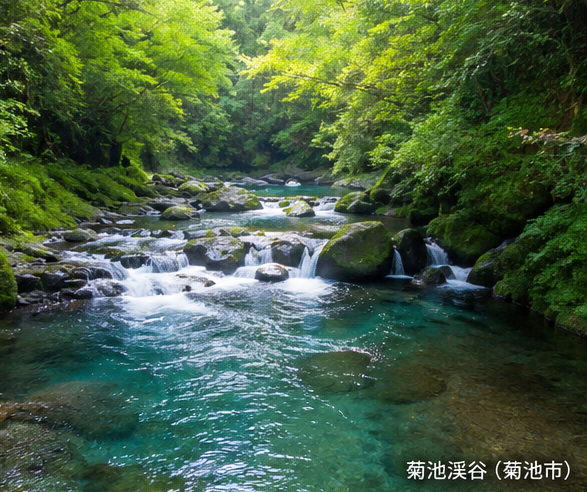

ORIGIN & STORY
阿蘇の大地が育んだ、
豊かな恵みが海苔を育てる。
阿蘇山から湧き出る豊富なミネラルを含んだ清らかな水は、菊池川となり、大浜の有明海へと注ぎ込みます。栄養豊かなこの恵みが、香り高く、旨味の深い海苔を育てます。
阿蘇の火山岩盤が生み出すミネラル豊富な湧水が旨味のもとになります。

ミネラル豊富な清流が農業の歴史を育て、海苔の成長を支えます。
潮の干満差と豊かな栄養環境、清浄な海水が高品質な海苔を育てる理想の環境です。